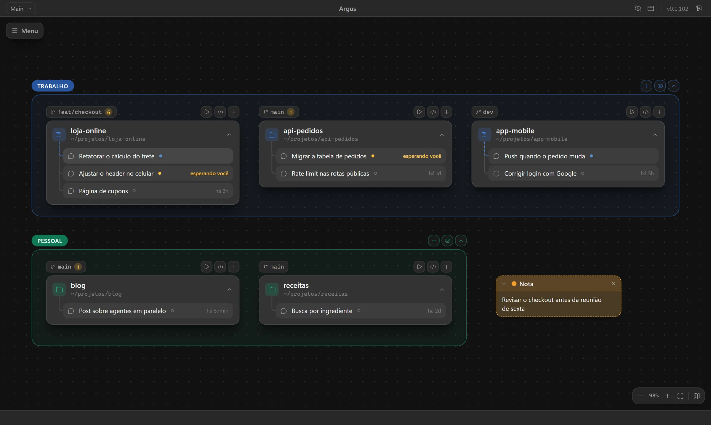
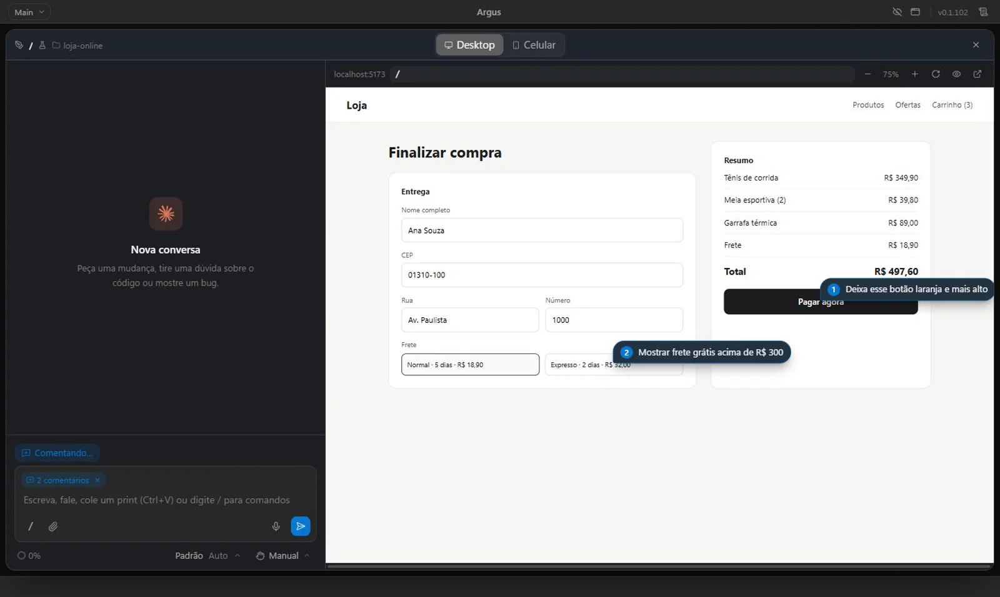
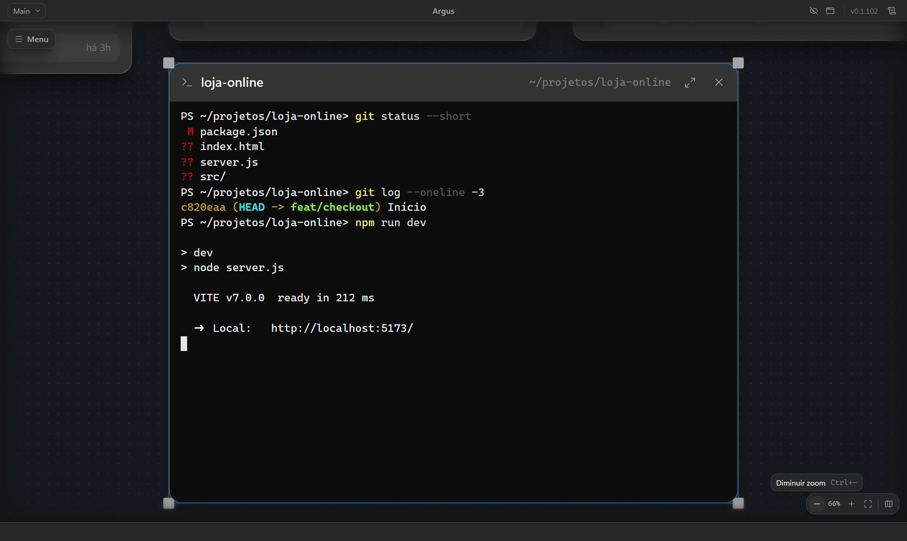

✎Blog
The Argus blog.
Product, behind the scenes and news from the people building the canvas for coding agents.

Product
Why a canvas for keeping up with coding agents
Ten terminal tabs don’t scale. What changes when each project becomes a block.
 Behind the scenes
Behind the scenesHow Argus uses your Claude subscription, with no API key
Argus doesn’t talk to the API: it runs the claude that’s already on your machine.

NewDesign mode: from comment to finished screen
Open your project’s page in Argus, click an element and say what to change.
ProductWork and personal, each with its own Claude account
Why Argus ties a Claude account to each group on the canvas.

NewClaude, Codex, Gemini and Cursor on the same canvas
The right agent for each task, and a chat that hands off steps to another.
Behind the scenesA new release almost every day
How Argus ships: an automatic release for every change and one-click updates.
Building the open way to keep track of coding agents.
Argus is the foundation for working with many agents at once, with everything in view and on your machine.
Download Argus